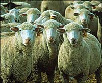
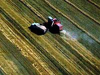
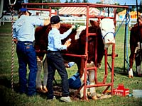

| In 1996, there were 56995 farms in Saskatchewan (down from over 60,840 in 1991) with an average size of 466 hectares. There were a total of 72925 people operating these farms and 80 percent were male. Although most farms grow cereals, over eight million cattle, sheep, pigs, and chickens were also raised. How do the operations on these farms change with the seasons. How do farm families cope with rural life? Check the links and find out more. |
|
Farm Types
 Although crop farms dominate the agriculture in Saskatchewan there are also many other kinds of farms. Crop farms include field crops, tree fruits or nuts, berries or grapes, vegetables and seeds. Livestock farms raise cattle, pigs, sheep, horses, exotic animals, etc.. Poultry farms rear hens, chickens, turkeys, exotic birds, etc. And the there are animal product farms that produce milk or cream, eggs, wool, furs or other agricultural products (greenhouse or nursery products, Christmas trees, mushrooms, sod, honey, maple syrup products). From berries to sheep, Saskatchewan farms are well diversified. Check out this section for a view on the many alternatives to cereal production.
Crop Farm  Grain, especially wheat, is a driving force in the Saskatchewan economy. Of the 35 million acres of farm land planted to wheat in Canada, over 21 million acres of that is seeded in Saskatchewan, mainly with spring wheat and durum. What happens e season to season in the operation of a crop farm? Find out here. |
|
Livestock Farm
Livestock farms in Saskatchewan are mainly devoted to cattle, although pigs and sheep are raised in significant numbers. The life on a cattle farm is hard with a daily routine that barely allows for vacations. The cattle have to be fed watered and housed with extra effort required during calving. The rewards are great, however, for those special farmers who take pride in their animals and can show them off at the various agricultural shows during the year. Check out the seasonal operations by clicking on the link.  |